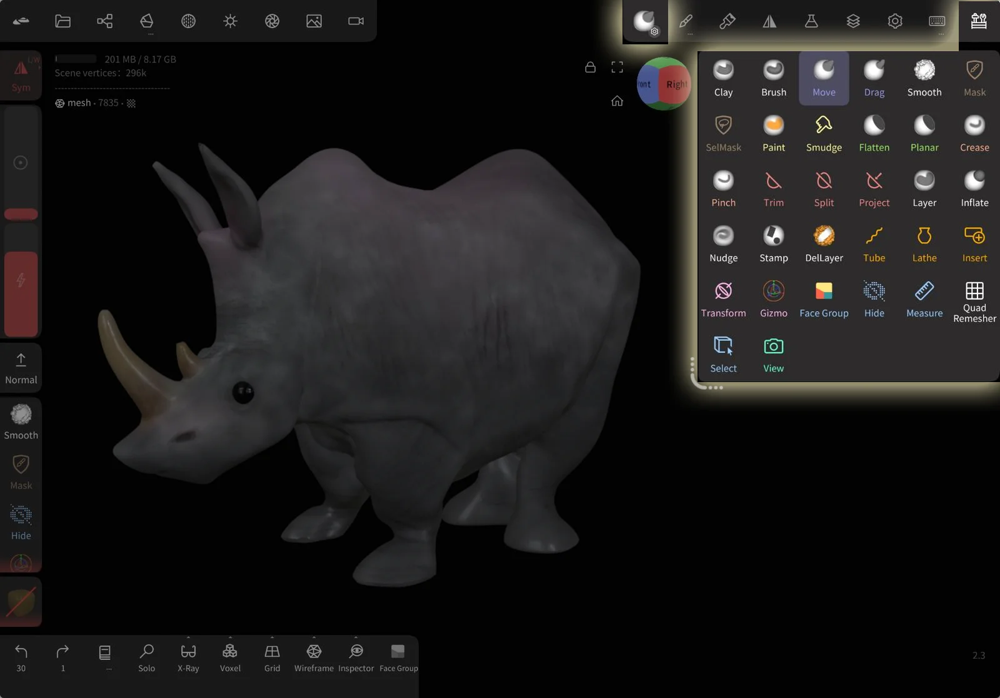
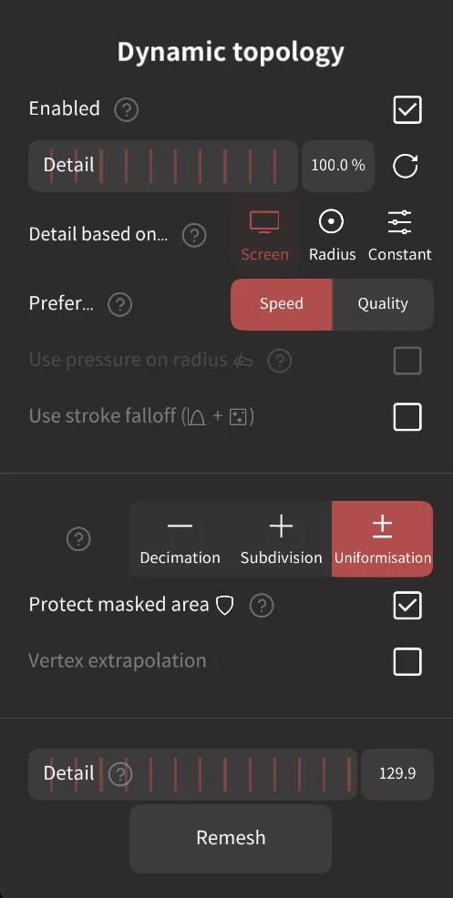
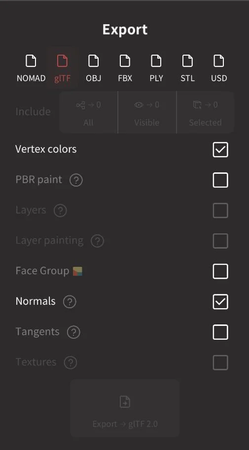

翻了半年 Nomad 设置面板，挖出这 5 个没人教你的隐藏玩法
从笔刷高级参数到命令行激活，从免费试用救急到导出前预查——Nomad 里藏得最深的几个开关，90% 的人打开设置面板扫一眼就划走了。
你以为 Nomad 就是 iPad 上捏泥巴的那几个笔刷？先去官网翻翻设置面板再说话——我翻了半年，把每一个菜单项都抠了一遍，发现这个软件藏得是真深——有些功能官方教程只提一句，有些甚至连文档都没正经讲。
移动笔刷里那两个被忽略的小勾
Move 和 Drag 两支形变笔刷，大多数人上手就会用，但打开 Move 的参数面板，底部那两个勾几乎没人碰过。
Same-side vertex only，勾上之后，笔刷只会拉扯那些朝向和移动方向一致的顶点。什么意思？比如你在脸前面拉颧骨，笔刷覆盖面可能穿过去抓到后脑勺的顶点——不勾的话，后脑勺会跟着一起被扯歪；勾上，只有正面那些"看见"你在拉的顶点才会动，背面纹丝不动。这个开关对调整五官位置特别有用，尤其是脸已经有了初步轮廓不想乱扯的时候。
另一个是 Radius (Background)——背景半径。默认值挺小，意思是笔刷离模型边缘多远还能"抓"到顶点。调轮廓剪影的时候，比如给动物拉尾巴根、给人物扩肩膀，把这个值调大一倍，你会发现隔着背景空白也能稳稳抓住边缘顶点，不用把笔刷精准贴在轮廓线上反复蹭。

这两个开关放在一个不太起眼的位置——笔刷面板的下半部分，默认都是关的，需要主动点进去改。我第一次发现的时候是在做一条龙尾，勾上 Same-side 之后正面拉长的鳞片不会把肚皮一起扯烂，瞬间香了。
拖拽笔刷 + 动态拓扑：拉长一切的组合拳
Drag 笔刷的核心差异就一条：选择区域在笔划过程中持续更新。Move 是落笔瞬间锁定顶点集，Drag 是按住不放一路拖，笔尖滑过的地方不断有新顶点加入选择。
但单独用 Drag 拉长会有个问题：原始网格面数有限，拉到一定程度顶点之间间距变大，再刻细节就刻不动了——笔刷想刻的折痕比两个顶点的间距还窄，自然刻不进去。
官方和社区教程公认的组合是 Drag 配合 动态拓扑。打开动态拓扑之后，笔划经过的地方会实时自动插入新顶点，拉长区域的面密度保持恒定。这对做龙尾、触手、盘起的绳索、动物长角这类需要连续形变还要保持细节的结构来说，直接省去了反复重拓扑的麻烦。
动态拓扑的开关在拓扑菜单里，默认关闭——我见过不少雕塑作品要么尾巴拉得太细面数崩了，要么中途停下来重拓扑打断手感，全是因为没开这个。

命令行激活：机房批量部署的隐藏姿势
桌面版激活码大多数人都是打开界面输入的，但 Nomad 还提供了一套完全不打开界面的命令行参数：--activate / --deactivate / --license-status。
这玩意儿主要是给机房批量部署用的——想象一个计算机教室三十台电脑，一台台开界面输激活码要半小时，写个批处理跑一遍就搞定。还有个细节：可以传入存钥匙的文件路径，避免钥匙直接出现在 shell 历史记录里——对 IT 管理员来说，这个小设计比表面上看起来实用得多。
另外，激活机制里有个很多人不知道的规则：一台电脑 = 一个机器 ID，一把钥匙绑定两个机器 ID。重装系统或者换主板会改变机器 ID，等于占了一个新名额。所以抹机之前一定要先在官方门户里释放旧名额——我见过有人重装三次系统才想起来，两个名额都用完了还得写邮件找客服。
还有个冷知识：移动版商店里买的授权，和桌面版是两套独立体系——移动钥匙解不了桌面，桌面钥匙也解不了移动版。买之前得想清楚主战场在哪边。
免费试用模式的隐藏救急功能
桌面版从官方下载后走免费试用模式默认不给完整功能，但有一个例外：移动设备打不开的大项目，可以用桌面版免费试用模式导入导出救急。
什么意思？iPad 上一个 500 万面的项目，打开直接闪退或者卡成 PPT，怎么办？把 NOM 文件传到电脑，用桌面版试用模式打开——虽然没法激活完整功能，但导入导出是开放的。你可以把它导出成 glTF 或者 OBJ，然后回 iPad 用减面工具重拓扑之后再导入回来，等于在免费模式里完成了一次"跨设备降面"。
这个用法官方只在崩溃排查那一节提了一句，我也是后来去Nomad文档翻了一下才找到原文，属于那种"知道的人知道，不知道的人永远不知道"的类型。我上周帮朋友救了个 iPad 上打不开的 480 万面雕塑，就是这么干的——全程没激活、没花钱，导出 glB 回 iPad 重拓扑到 120 万面之后，流畅得像新模型。
导出前那个被忽略的实时计数器
导出菜单里每个格式选项的图标旁边，都有一个数字实时显示"将要导出的对象数"。大多数人点导出就直接选格式点确认，从来没注意过那个小数字。
想象一下：你辛苦雕塑了一个二十个物体的场景，其中五个图层被隐藏了没导出——点"全部"是二十个，点"仅可见"是十五个，点"仅选中"可能只有三个。那个数字就在图标旁边，导出前扫一眼就能确认范围对不对，比导出完才发现漏了东西重导一遍要省事儿得多。
另外，导出时的"范围"下拉框还有个小细节：它的记忆是临时的——关掉导出菜单再打开，会自动回到"全部"。所以每次导出前都得重新选，别以为上次选了"仅可见"这次就还保持着。
导出支持七种格式，每种格式对顶点颜色、四边面、图层、纹理的支持程度不一样——比如 STL 不支持四边面也不支持纹理，glTF 是目前最完整的跨软件格式，官方生态的 PBR 支持最稳。选错格式导出完再进 Blender 发现贴图丢了，那可真是返工到哭。

哪些坑别踩
聊完隐藏功能说几个容易踩的坑。
首先，动态拓扑开着的时候别做精细纹理雕刻——动态拓扑会频繁插入新顶点，纹理 UV 会跟着变形。正确顺序是：大形阶段开动态拓扑自由拉伸 → 确定整体形态之后关掉它 → 再雕刻细节和上纹理。
然后，命令行激活一定要用 --license-status 先确认状态再抹机——我自己去年就栽过：重装 Windows 之前忘了释放名额，导致一个钥匙的两个名额被一台机器占死，最后写邮件给官方客服才解决，等了整整三天。
最后，移动版和桌面版的授权真的不通用——别听某些帖子说"买移动版送桌面"，那是老黄历了。现在两套授权体系完全独立，买之前得想清楚主要在哪边工作。
Nomad 这个软件最有意思的地方就在于：它的界面看起来很简洁，但把每一个角落都抠一遍，总能翻出点新东西。上面这五个算是我这半年里最实用的发现——不是什么"隐藏彩蛋"那种噱头，是真能省时间、救急、或者让作品上一个档次的设置。
把一个软件用透，往往不是靠花多少时间堆教程，而是停下来多看看那些默认不勾的小选项。
这套资料我同时维护了三份镜像，开源仓库分别在GitHub、Gitee和GitCode——国内访问偶尔卡的话换个镜像站就行。